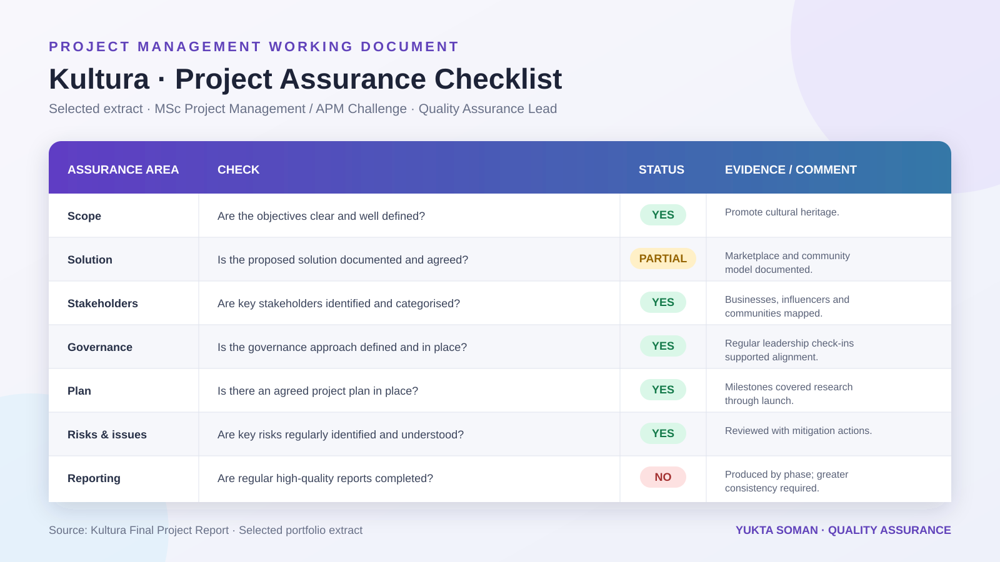

Winner, APM Wessex PM Challenge 2025
Kultura
Quality Assurance Lead, University of Southampton client project, Oct 2024 to May 2025
- Context
- A cultural exchange and artisan-support platform built by an international, multidisciplinary student team for a real client.
- What I did
- Set the quality plan, acceptance criteria, KPIs and review checkpoints. Kept a 25-item risk register and helped prioritise six key risks. Reviewed research, design, content and prototype against client, GDPR and accessibility requirements.
- Outcome
- Gaps became corrective actions before final delivery, and the team won the 2025 regional challenge.